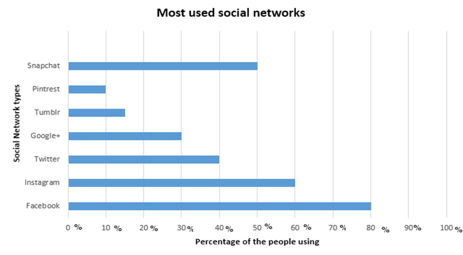

- I have also asked another question in my survey, “What are the social networks that you use mostly?” Below I have presented the results, and found that most of people use Facebook daily. 
- In conclusion, most of the people in 14-18 age group use many devices daily.